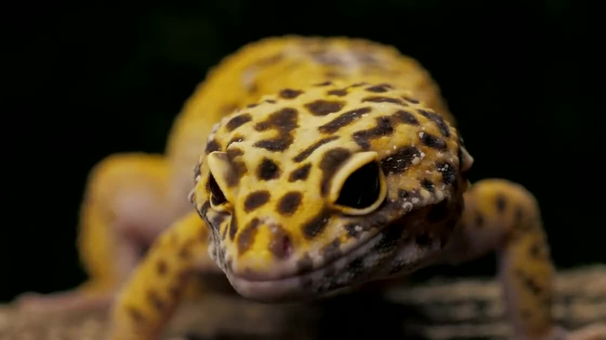
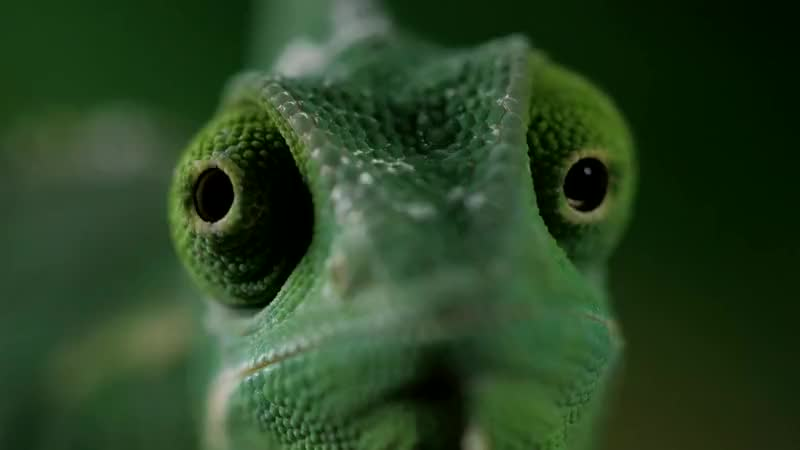
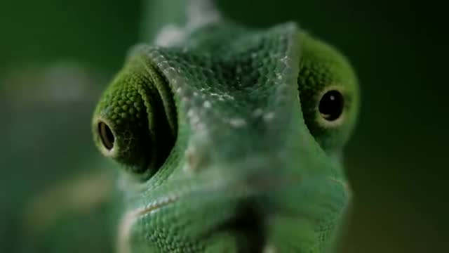

Reptiles, everything for their home, and real advice from people who keep them. Right here on Talbot Road.


Come in or give us a call. We'll help you pick the right animal and set it up the right way.
Call for today's hours, or to check what's in stock before you drive over.
Call now →